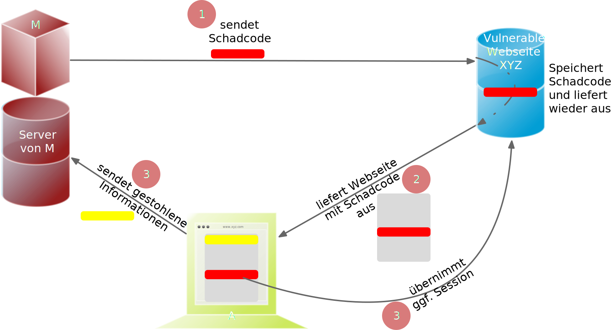

1 voidhost_lookup(char*user_supplied_addr){ 2 structhostent*hp; 3 in_addr_t*addr; 4 charhostname[64]; 5 in_addr_tinet_addr(constchar*cp);// function prototype
6 7 /* routine that ensures user_supplied_addr is in the right format for
8 conversion */ 9 10 validate_addr_form(user_supplied_addr);11 addr=inet_addr(user_supplied_addr);12 hp=gethostbyaddr(addr,sizeof(structin_addr),AF_INET);13 strcpy(hostname,hp->h_name);14 }
Durch eine XSS Lücke werden häufig Informationen abgegriffen (z. B. Session Cookies). Allerdings ist es ggf. auch möglich, dass der Angreifer die Session des Nutzers übernimmt und sich als dieser ausgibt.
Stored XSS (Typ 2)

Reflected XSS (Typ 1)
Reflected XSS ist häufig schwerer auszunutzen, da der Angreifer den Nutzer dazu bringen muss, einen Link zu klicken, der den Angriffsvektor enthält. Bei Stored XSS ist dies nicht notwendig, da der Angriffsvektor bereits auf dem Server gespeichert ist.
Dom-based XSS (Typ 0)
Dom-based XSS ist am schwersten Auszunutzen, da der Angreifer den Nutzer dazu bringen muss den Schadcode in die Informationen einzubringen, die von dem Script verarbeitet werden (z. B. durch das Eingeben in ein Formular).
CWE-79: XSS - Beispiel 1 - XSS Typ 1 (Php)
1 # Rückgabe einer Willkommensnachricht basierend auf dem
2 # HTTP Get username Parameter
3 $username = $_GET['username'];
4 echo '<div class="header"> Welcome, ' . $username . '</div>';
CWE-89: Improper Neutralization of Special Elements used in an SQL Command (SQL Injection)
CWE-89: Improper Neutralization of Special Elements used in an SQL Command
Kurzbeschreibung:
Ein SQL-Befehl wird ganz oder teilweise unter Verwendung extern beeinflusster Eingaben von einer vorgelagerten Komponente erzeugt. Dabei werden aber spezielle Elemente nicht oder falsch bereinigt, die den beabsichtigten SQL-Befehl verändern könnten, wenn er an eine nachgelagerte Komponente gesendet wird.
CWE-78: Improper Neutralization of Special Elements used in an OS Command (OS Command Injection)
CWE-78: Improper Neutralization of Special Elements used in an OS Command
Kurzbeschreibung:
Alles oder zumindest ein Teil eines Betriebssystembefehls hängt von extern beeinflussten Eingaben ab. Es erfolgt jedoch keine Bereinigung spezieller Elemente, die den beabsichtigten Betriebssystembefehl verändern könnten.
Wahrscheinlichkeit des Missbrauchs:
Hoch
Betrifft:
Verfügbarkeit, Vertraulichkeit, Integrität
Arten:
Ein bestimmtes Program wird ausgeführt und die Nutzerdaten werden als Parameter übergeben.
Die Anwendung bestimmt basierend auf den Nutzerdaten welches Program mit welchen Parametern ausgeführt wird.
CWE-78: Improper Neutralization of Special Elements used in an OS Command - Beispiel (Java)
CWE-78: Improper Neutralization of Special Elements used in an OS Command - Abhilfemaßnahmen und Erkennung
Verwendung von geprüften/sicheren APIs.
Anwendung bzw. Befehl nur mit den notwendigen Rechten betreiben (Principle of Least Privilege) bzw. in einer Sandbox ausführen.
Statische Analyse Werkzeuge
Dynammische Analyse in Kombination mit Fuzzing
Manuelle Code Reviews/Statische Analyse
ggf. Application-level Firewall einsetzen
CWE-20: Improper Input Validation
CWE-20: Improper Input Validation
Kurzbeschreibung:
Empfangene Eingaben oder Daten werden nicht nicht oder falsch validiert in Hinblick darauf, dass die Eingaben die Eigenschaften haben, die für eine sichere und korrekte Verarbeitung der Daten erforderlich sind.
Wahrscheinlichkeit des Missbrauchs:
Hoch
Betrifft:
Verfügbarkeit, Vertraulichkeit, Integrität
Anwendungsbereiche:
Rohdaten - Strings, Zahlen, Parameter, Dateiinhalte, etc.
Metadaten - Information über die Rohdaten, wie zum Beispiel Header oder Größe
CWE-20: Improper Input Validation - zu verifizierende Werte und Eigenschaften
Größen wie Größe, Länge, Häufigkeit, Preis, Rate, Anzahl der Vorgänge, Zeit usw.
implizite oder abgeleitete Größen, wie z. B. die tatsächliche Größe einer Datei anstelle einer angegebenen Größe
Indizes, Offsets oder Positionen in komplexeren Datenstrukturen
Schlüssel von Hashtabellen, assoziativen Feldern usw.
syntaktische Korrektheit - Übereinstimmung mit der erwarteten Syntax
Bestimmung des tatsächlichen Typs der Eingabe (oder das, was die Eingabe zu sein scheint)
Konsistenz zwischen den Rohdaten und Metadaten, zwischen Referenzen usw.
semantische Korrektheit bzw. Konformität mit domänenspezifischen Regeln, z. B. Geschäftslogik
Authentizität von z. B. kryptografischen Signaturen
O'Reilly ist keine SQL Injection
CWE-20: Improper Input Validation - Beispiel partielle Validierung
CWE-20: Improper Input Validation - Abhilfemaßnahmen und Erkennung
(begrenzt) Statische Analyse Werkzeuge
Manuelle statische Analyse insbesondere in Hinblick auf die zugrundeliegende Semantik
Dynamische Analyse mit Fuzzing
CWE-125: Out-of-bounds Read
CWE-125: Out-of-bounds Read
Kurzbeschreibung:
Daten vor oder nach einem Puffer werden gelesen.
Wahrscheinlichkeit des Missbrauchs:
Hoch
Programmiersprachen:
C, C++
Betrifft:
Vertraulichkeit
Auswirkungen:
Umgehung von Schutzmaßnahmen; Lesen von Speicher
Die Ausnutzung dieser Schwachstelle ist häufig schwierig, da nicht immer bekannt ist welche und wie viele Daten gelesen werden können. Es kann allerdings möglich sein Speicheradressen auszulesen. Dies kann ggf. genutzt werden, um Mechanismen wie ASLR zu umgehen.
1 intgetValueFromArray(int*array,intlen,intindex){ 2 intvalue; 3 4 // check that the array index is less than the maximum length of the array
5 if(index<len){ 6 // get the value at the specified index of the array
7 value=array[index]; 8 } 9 // if array index is invalid then output error message
10 // and return value indicating error
11 else{12 printf("Value is: %d\n",array[index]);13 value=-1;14 }15 returnvalue;16 }
CWE-125: Out-of-bounds Read - Abhilfemaßnahmen und Erkennung
eine sichere Programmiersprache verwenden
Fuzzing
Statische Analyse Werkzeuge welche Kontroll- und Datenflussanalyse durchführen
CWE-22: Improper Limitation of a Pathname to a Restricted Directory (Path Traversal)
CWE-22: Improper Limitation of a Pathname to a Restricted Directory
Kurzbeschreibung:
Externe Eingaben werden für die Konstruktion eines Pfadnamens verwendet, der eine Datei oder ein Verzeichnis identifizieren soll, das sich unterhalb eines eingeschränkten übergeordneten Verzeichnisses befindet. Eine Bereinigung spezieller Elemente innerhalb des Pfadnamens erfolgt jedoch nicht ordnungsgemäß, was dazu führen kann, dass der Pfadname zu einem Ort außerhalb des eingeschränkten Verzeichnisses aufgelöst wird.
1 importos 2 importsys 3 defmain(): 4 filename=sys.argv[1] 5 path=os.path.join(os.getcwd(), 6 filename) 7 try: 8 withopen(path,'r')asf: 9 file_data=f.read()10 exceptFileNotFoundErrorase:11 print("Error - file not found")12 13 # do something with file_data
Dokumentation os.path.join
Join one or more path components intelligently. The return value is the concatenation of path and any members of *paths with exactly one directory separator following each non-empty part except the last, meaning that the result will only end in a separator if the last part is empty.
If a component is an absolute path [...], all previous components are thrown away and joining continues from the absolute path component.
CWE-22: Path Traversal - Abhilfemaßnahmen und Erkennung
Eingabe vollständig validieren; zum Beispiel über kanonische Pfade
Sandboxen
Umgebung härten
Bei Fehlerausgaben darauf achten, dass keine Informationen über das Dateisystem preisgegeben werden
den Code mit minimalen Rechten ausführen
CWE-352: Cross-Site Request Forgery (CSRF)
CWE-352: Cross-Site Request Forgery (CSRF)
Kurze Beschreibung:
Die Webanwendung prüft nicht bzw. kann nicht prüfen, ob eine Anfrage absichtlich von dem Benutzer gestellt wurde, von dessen Browser sie übermittelt wurde.
D. h. eine CSRF Schwachstelle nutzt das Vertrauen aus, das eine Webseite in den Browser eines Nutzers hat. Bei einem CSRF-Angriff wird ein legitimer Nutzer von einem Angreifer dazu gebracht, ohne sein Wissen eine Anfrage zu übermitteln, die er nicht beabsichtigt hat und auch nicht bemerkt.
Missbrauchswahrscheinlichkeit:
Mittel
Auswirkung:
Hängt von den Nutzerrechten ab
Ausmaß:
Vertraulichkeit, Integrität, Verfügbarkeit
CWE-352: Cross-Site Request Forgery (CSRF) - ursprüngliche Form
CWE-352: Cross-Site Request Forgery (CSRF) in 2023
Fiber ist ein von Express inspiriertes Web-Framework, das in Go geschrieben wurde. In der Anwendung wurde eine Cross-Site Request Forgery (CSRF)-Schwachstelle entdeckt, die es einem Angreifer ermöglicht, beliebige Werte zu injizieren und bösartige Anfragen im Namen eines Benutzers zu fälschen. Diese Schwachstelle kann es einem Angreifer ermöglichen, beliebige Werte ohne Authentifizierung einzuschleusen oder verschiedene böswillige Aktionen im Namen eines authentifizierten Benutzers durchzuführen, wodurch die Sicherheit und Integrität der Anwendung gefährdet werden kann. Die Schwachstelle wird durch eine unsachgemäße Validierung und Durchsetzung von CSRF-Tokens innerhalb der Anwendung verursacht.
Identifizierte Schwachstellen: CWE-20 Improper Input Validation, CWE-807 Reliance on Untrusted Inputs in a Security Decision, CWE-565 Reliance on Cookies without Validation and Integrity Checking, CWE-352 Cross-Site Request Forgery
CWE-352: Cross-Site Request Forgery (CSRF) in 2023
Standardtechniken, die CSRF verhindern sollen:
Same-site Cookies (für Authentifizierung)
CSRF-Tokens, wenn diese die folgenden Eigenschaften haben:
Einmalig pro Nutzersession
Geheim
nicht vorhersagbar (z. B. eine sehr große, sicher erzeugte Zufallszahl)
Validierung des Referer-Header
Custom Request Header, da diese nur vom JavaScript Code gesetzt werden können, der den gleichen Ursprung hat (siehe Same Origin Policy (SOP)).
Auch diese Techniken lassen sich ggf. (alle zusammen) aushebeln, wenn die Anwendung weitere Schwachstellen aufweist. So gibt/gab es Anwendungen, die Anfragen, die nur über ein POST request gestellt werden sollten, auch bei einem GET akzeptiert haben.
In allen Browsern wird in der Zwischenzeit für Cookies die Same-site Policy angewandt mit dem Wert Lax. Dieser Wert hat zur Folge, dass Cookies nur dann gesendet werden, wenn der Nutzer explizit auf einen Link klickt oder sich innerhalb der selben Seite befindet.
CWE-434: Unrestricted Upload of File with Dangerous Type
CWE-434: Unrestricted Upload of File with Dangerous Type
Kurze Beschreibung:
Es ist möglich potentiell gefährliche Dateien hochzuladen bzw. zu transferieren, die von der Anwendung automatisch im Kontext der Anwendung verarbeitet werden.
Missbrauchswahrscheinlichkeit:
Mittel
Auswirkung:
Bis hin zur Ausführung von beliebigen Befehlen
Ausmaß:
Vertraulichkeit, Integrität, Verfügbarkeit
CWE-434: Unrestricted Upload of File with Dangerous Type - Beispiel
HTML:
1 <formaction="upload_picture.php"method="post"enctype="multipart/form-data">2 Choose a file to upload:
3 <inputtype="file"name="filename"/>4 <br/>5 <inputtype="submit"name="submit"value="Submit"/>6 </form>
PHP:
1 // Define the target location where the picture being
2 // uploaded is going to be saved.
3 $target = "pictures/" . basename($_FILES['uploadedfile']['name']);
4 5 // Move the uploaded file to the new location.
6 move_uploaded_file($_FILES['uploadedfile']['tmp_name'], $target)
CWE-434: Unrestricted Upload of File with Dangerous Type - Abhilfemaßnahmen und Erkennung
Beim Speichern von Dateien niemals den ursprünglichen Dateinamen verwenden sondern einen vom Server generierten.
Speicher die Daten nicht im Kontext der Webanwendung sondern außerhalb des Webroots.
Prüfe die Dateiendung. Prüfe den Inhalt der Datei gegen die Erwartung.
Ausführen der Webanwendung mit minimalen Rechten.
Sandbox.
CWE-122: Heap-based Buffer Overflow
CWE-122: Heap-based Buffer Overflow
Kurze Beschreibung:
Ein Pufferüberlauf, bei dem der Puffer, der überschrieben wird, auf dem Heap alloziiert wurde, was im Allgemeinen bedeutet, dass der Puffer mit einer Routine wie malloc() allloziiert wurde.
CWE-122: Heap-based Buffer Overflow - Abhilfemaßnahmen und Erkennung
Verwendung einer sicheren Programmiersprache
Verwendung von sicheren APIs
Kompilierung unter Verwendung entsprechender Schutzmechanismen (Position-Independent Executables (PIE), Canaries, ...)
Härtung der Umgebung (z. B. ASLR)
Statische Analyse Werkzeuge
Fuzzing
CWE-502: Deserialization of Untrusted Data
CWE-502: Deserialization of Untrusted Data
Kurze Beschreibung:
Nicht vertrauenswürdige Daten werden deserialisiert ohne - je nach Bibliothek notwendige vorhergehende - Prüfung, dass die Daten die erwarteten Eigenschaften haben.
Missbrauchswahrscheinlichkeit:
Mittel
Sprachen:
Java, Ruby, Python, PHP, JavaScript, ...
Ausmaß:
Insbesondere: Integrität und Verfügbarkeit (DoS); weitere Effekte sind vom Kontext abhängig.
Alternative Begriffe:
(Un-)Marshalling, (Un-)Pickling
Bei der Serialisierung werden programminterne Objekte so verpackt, dass die Daten extern gespeichert und/oder übertragen werden können. Die Deserialisierung kehrt diesen Prozess um.
CWE-502: Deserialization of Untrusted Data - Beispiel
In diesem Beispiel wird ein Objekt aus einer Datei gelesen und in eine Variable vom Typ javax.swing.JButton geschrieben. Der Typ des Objekts wird nicht geprüft. Es ist möglich, dass die Datei ein Objekt enthält, welches vom Typ javax.swing.JButton ist, aber nicht die Eigenschaften hat, die ein Button haben sollte. In diesem Fall wird keine Exception geworfen, aber das Objekt kann nicht wie erwartet verwendet werden bzw. es kommt zur Ausführung von beliebigem Code.
CWE-502: Deserialization of Untrusted Data - Beispiel
Python
1 classExampleProtocol(protocol.Protocol): 2 3 defdataReceived(self,data): 4 # ... parse the incoming data and 5 # after receiving headers, call confirmAuth() to authenticate 6 7 defconfirmAuth(self,headers): 8 try: 9 token=cPickle.loads(base64.b64decode(headers['AuthToken']))10 ifnotcheck_hmac(token['signature'],token['data'],getSecretKey()):11 raiseAuthFail12 self.secure_data=token['data']13 except:14 raiseAuthFail
Der Webserver erhält eine URL oder eine ähnliche Anfrage und ruft den Inhalt dieser URL ab, stellt aber nicht sicher, dass die Anfrage an das erwartete Ziel gesendet wird.
Technologien:
Webserver
Ausmaß:
Vetraulichkeit, Integrität
CWE-918: Server-Side Request Forgery
CWE-918: Server-Side Request Forgery
Beispiel: CVE-2002-1484
Beschreibung:
Wenn der DB4Web-Server so konfiguriert ist, dass er ausführliche Debug-Meldungen verwendet, können entfernte Angreifer DB4Web als Proxy verwenden und über eine Anfrage an eine URL, die die Ziel-IP-Adresse und den Port angibt, TCP-Verbindungen zu anderen Systemen (Port-Scan) versuchen, was einen Verbindungsstatus in der resultierenden Fehlermeldung erzeugt.
CWE-918: Server-Side Request Forgery - Beispiel: URL Parser vs. Abfrage der URL
PHP (> 7.0.13):
1 $url = 'http://foo@127.0.0.1⬜@google.com:11211/'; // ⬜ is "just" a space
2 $parsed = parse_url($url);
3 var_dump($parsed[host]); // string(10) "google.com"
4 var_dump($parsed[port]); // int(11211)
5 curl($url);
Ergebnis:
curl fragt die URL 127.0.0.1:11211 ab.
D. h. curl und php interpretieren die URL unterschiedlich.
CWE-918: Server-Side Request Forgery
Variante: Blind SSRF
Bei Blind SSRF-Schwachstellen werden auch Back-End-HTTP-Anfragen an eine bereitgestellte URL gestellt, die Antwort der Back-End-Anfrage jedoch nicht an die Front-End-Antwort der Anwendung zurückgegeben.
Behandlung von Zugriffen von lokalen Maschinen sollte mit der gleichen sorgfalt überprüft werden wie Zugriffe von externen Maschinen; andernfalls können kritische SSRF Angriffe durchgeführt werden
Firewall/Network Policy, um Zugriff auf interne Systeme zu verhindern
CWE-843: Access of Resource Using Incompatible Type (Type Confusion)
CWE-843: Access of Resource Using Incompatible Type (Type Confusion)
Beschreibung:
Eine Anwendung initialisiert eine Ressource mit einem bestimmten Typ (z. B. Zeiger (Pointer), Objekt, etc.). Später wird auf die Ressource (Variable) dann mit einem anderen Typ zugegriffen.
Sprachen:
insbesondere (aber nicht ausschließlich) C/C++; im Prinzip in jeder Sprache, die automatische Typkonvertierungen durchführt.
Ausmaß:
Integrität, Verfügbarkeit, Vertraulichkeit
CWE-843: Access of Resource Using Incompatible Type - Beispiel in C
CWE-306: Missing Authentication for Critical Function
CWE-306: Missing Authentication for Critical Function
Beschreibung:
Eine Anwendung führt eine kritische Funktion aus, ohne die Identität des Nutzers zu überprüfen. Kritischer Funktionen sind solche, die entweder signifikante Ressourcen verbrauchen oder nur von privilegierten Nutzern ausgeführt werden sollten.
Sprachen:
"alle"
CWE-306: Missing Authentication for Critical Function - Abhilfemaßnahmen und Erkennung
manuelle Code Reviews
statische Analyse (Binärcode und/oder Quellcode)
Dump C / C++
C++ is missjudged by the White House
Open Worldwide Application Security Project (OWASP)
OWASP
gemeinnützige Stiftung, die sich für die Verbesserung der Sicherheit von Software einsetzt
2001 gegründet
weltweit tätig
Stellt insbesondere Foren, Dokumente und Werkzeuge bereit
Dokumente, die bei der Entwicklung sicherer Anwendungen unterstützen:
Benenne die Schwachstelle(n) entsprechend der CWEs (ohne ID).
Identifiziere die für die Schwachstelle(n) relevanten Zeilen im Code.
Gebe - falls möglich - einen Angriffsvektor an.
Skizziere mögliche Auswirkung der Schwachstelle(n) (z. B. Verlust der Vertraulichkeit, Integrität oder Verfügbarkeit; Umgehung der Zugriffskontrolle; beliebige Codeausführung, ...)